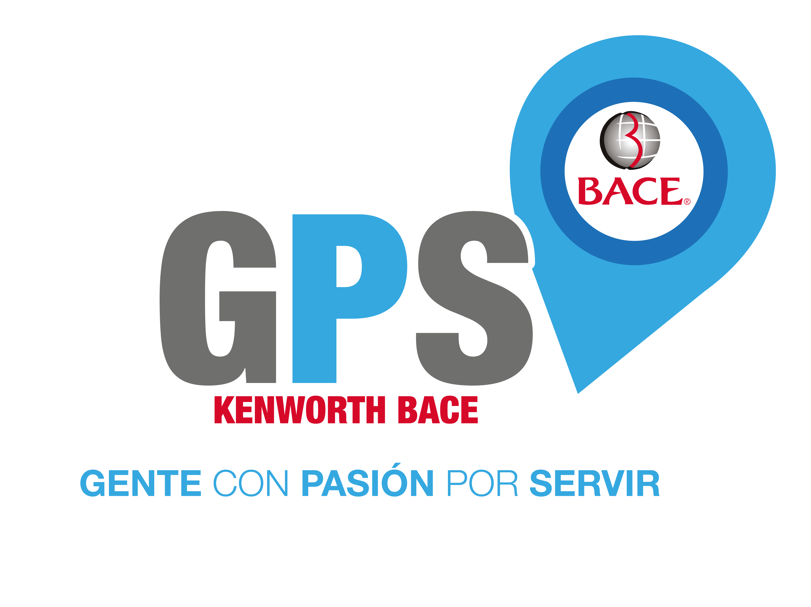
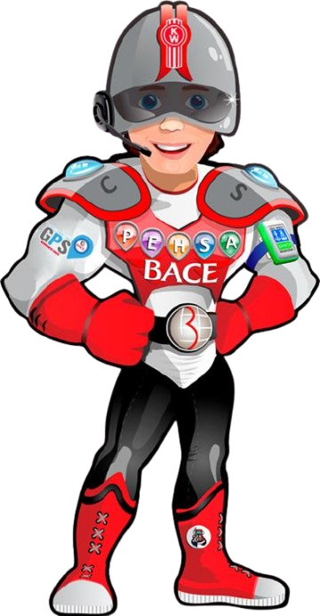

Comienza la travesía
Alfredo Martos Martínez inicia operaciones en León.
Desde 1967
Una visión nacida en León, Guanajuato, que se convirtió en familia, servicio y un legado que hoy sigue moviendo a México.
El origen
El Ing. Alfredo Martos Martínez inició operaciones en León representando a Kenworth del Centro para Guanajuato, Aguascalientes y Zacatecas. El 24 de diciembre de 1969 nació formalmente Tractocamiones del Centro.
Hitos que marcaron el camino
Arrastra para recorrer →
Alfredo Martos Martínez inicia operaciones en León.
Se inaugura Kenworth del Centro Matriz en León.
Crece la presencia en Querétaro, San Luis Potosí y Celaya.
Kenworth del Bajío inicia operaciones desde Querétaro.
Centro y Bajío se consolidan bajo una misma identidad.
Abre una nueva matriz con capacidades de alto nivel tecnológico.
Se constituye el Consejo de Administración.
Grupo BACE coloca las primeras unidades W990 en México.
La familia PACCAR abre un nuevo capítulo en la historia BACE.
Una misma identidad
Kenworth DAF del Centro y Kenworth DAF del Bajío comparten valores, procesos y una convicción: acompañar al cliente para que su operación nunca se detenga.

Nuestra brújula
GPS guía la manera en que nuestra gente toma decisiones, crea relaciones y entrega soluciones.
Escuchamos, entendemos y actuamos con empatía.
Aprendemos, innovamos y avanzamos juntos.
Colaboramos con respeto y sentido de familia.
Elevamos cada detalle y cumplimos la palabra.
Operamos pensando en las próximas generaciones.
Estamos en el negocio de mejorar la vida de las personas.
El guardián de nuestra cultura
Representa a las mujeres y hombres que llevan los valores BACE en cada ruta, taller, conversación y solución.

El siguiente capítulo